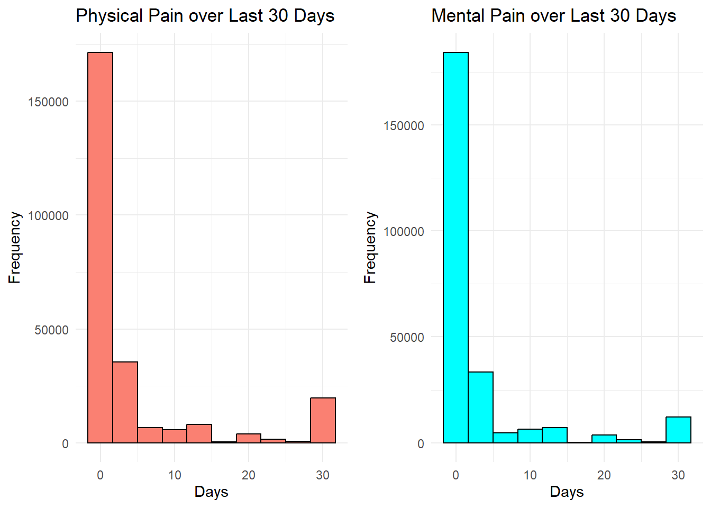
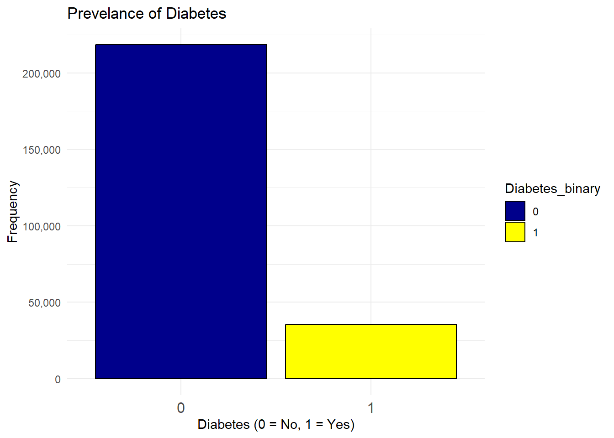
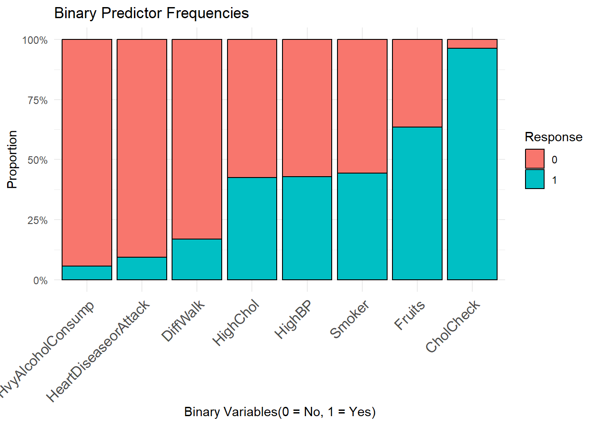
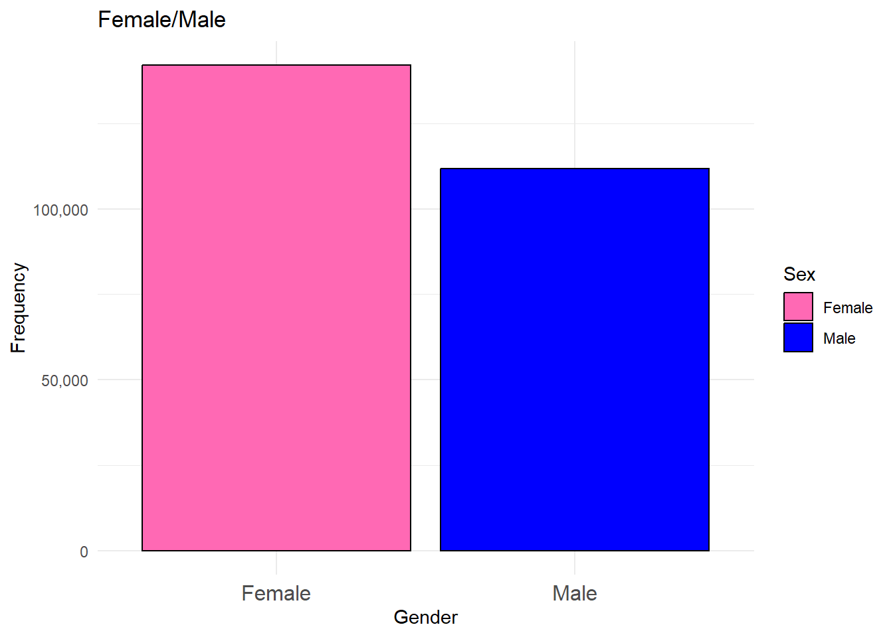
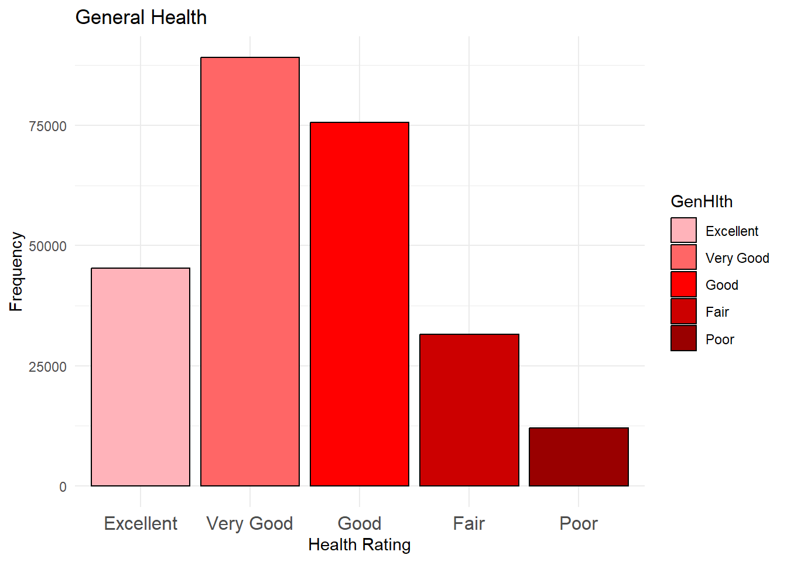

library(tidyverse)
library(cowplot)
library(scales)
diabetes <- read.csv("diabetes_binary_health_indicators_BRFSS2015.csv")EDA(Exploratory Data Analysis)
Introduction
Hello! Welcome to My (Robbie’s) Final Project for ST558. The purpose of this project is to explore a diabetes dataset, from Kaggle. The dataset also has a codebook, which can be found here.
This page takes the user through exploratory data analysis of the diabetes dataset, including data validation, distribution analysis, and determining an overall objective for the Modeling Page.
Variables Used in this Project
All of the variables can be found at the links above. Throughout the project, the creator decided to change objectives a few times, but the main objective was investigating relevant categorical variables of interest. Note that the creator has decided to exclude the BMI variable, which is the only numerical variable available.
Response variable:
- Diabetes_binary: 0 if no diabetes, 1 if diabetes
This is our variable of interest. We wish to see if we can predict if an individual has diabetes based on predictor variables.
Predictor variables:
HighBP(0,1): 0 if individual does not have high blood pressure, 1 if individual does have high blood pressure
HighChol(0,1): 0 if individual does not have high cholesterol, 1 if individual does have high cholesterol
Fruits(0,1): 0 if individual does not consume fruit daily, 1 if individual does consume fruit daily
DiffWalk(0,1): 0 if individual does not have trouble walking, 1 if individual does have difficulty walking
Smoker: 0 if individual has not smoked 5 packs of cigarettes (100 cigarettes) in their lifetime, 1 if individual has smoked 5 packs of cigarettes (100 cigarettes) in their lifetime
CholCheck(0,1): 0 if individual has not had their cholesterol levels checked in the last 5 years, 1 if individual has had their cholesterol levels checked in the last 5 years
HeartDiseaseorAttack(0,1): 0 if individual does not have heart disease AND has not had a heart attack, 1 if individual has had either one or both
HvyAlcoholConsump(0,1): 0 if individual is not a heavy drinker, 1 if individual is a heavy drinker (>14 drinks men, >7 women)
Sex(0,1): 0 if individual is female, 1 if individual is male
Age(1-13): This variable captures if a user is in one of the following age categories:
1: 18-24, 2: 25-29, 3: 30-34, 4: 35-39, 5: 40-44, 6: 45-49, 7: 50-54,
8: 55-59, 9: 60-64, 10: 65-69, 11: 70-75, 12: 75-59, 13: 80-99GenHlth(1-5): This variable captures a user’s overall health:
1: Excellent 2: Very Good 3: Good 4: Fair 5: Poor
The following variables were modified by the creator to accentuate differences in distribution.
MentHlth(0-2): scale of days with bad mental health.
0: Individual experiences no mental health pain.
1: Individual experiences some mental health pain in the last 30 days.
2: Individual experiences mental health pain every day.PhysHlth(0-2): scale of days with bad physical health.
0: Individual experiences no physical health pain.
1: Individual experiences some physical health pain in the last 30 days.
2: Individual experiences physical health pain every day.
Exploratory Data Analysis
My general thought process for EDA is to first investigate if there are any missing values first. If so, then investigate those rows/columns. Second, I want to check the structures of the data and make sure they all make sense. Lastly, let’s analyze some distributions of the individual categorical variables, and see if we can notice any cool trends. This will help us find an objective, and help us narrow down to some variables that we want to look at.
Missing Values
(sum(is.na(diabetes)))[1] 0Great! It looks like there are none. I think a natural next step would be to investigate all of the variables, and make sure their names are legible and their values are logical.
Variable Names
as_tibble(diabetes, width = Inf)# A tibble: 253,680 × 22
Diabetes_binary HighBP HighChol CholCheck BMI Smoker Stroke
<dbl> <dbl> <dbl> <dbl> <dbl> <dbl> <dbl>
1 0 1 1 1 40 1 0
2 0 0 0 0 25 1 0
3 0 1 1 1 28 0 0
4 0 1 0 1 27 0 0
5 0 1 1 1 24 0 0
6 0 1 1 1 25 1 0
7 0 1 0 1 30 1 0
8 0 1 1 1 25 1 0
9 1 1 1 1 30 1 0
10 0 0 0 1 24 0 0
# ℹ 253,670 more rows
# ℹ 15 more variables: HeartDiseaseorAttack <dbl>, PhysActivity <dbl>,
# Fruits <dbl>, Veggies <dbl>, HvyAlcoholConsump <dbl>, AnyHealthcare <dbl>,
# NoDocbcCost <dbl>, GenHlth <dbl>, MentHlth <dbl>, PhysHlth <dbl>,
# DiffWalk <dbl>, Sex <dbl>, Age <dbl>, Education <dbl>, Income <dbl>Based on the given variable descriptions above, I believe that the variable names are rather sensical. However, it looks like the data was read in as entirely double and not as factors.
Changing Data to Factors
Binary
First, let’s start with all the variables that are binary. We can give Sex labels for ease of use, since the rest of them are just yes/no.
diabetes <- diabetes |>
mutate(across(c(1, 2, 3, 4, 6, 7, 8, 9, 10, 11, 12, 13, 14, 18), as.factor)) |>
mutate(Sex = factor(Sex, levels = c(0,1), labels = c("Female", "Male")))
str(diabetes)'data.frame': 253680 obs. of 22 variables:
$ Diabetes_binary : Factor w/ 2 levels "0","1": 1 1 1 1 1 1 1 1 2 1 ...
$ HighBP : Factor w/ 2 levels "0","1": 2 1 2 2 2 2 2 2 2 1 ...
$ HighChol : Factor w/ 2 levels "0","1": 2 1 2 1 2 2 1 2 2 1 ...
$ CholCheck : Factor w/ 2 levels "0","1": 2 1 2 2 2 2 2 2 2 2 ...
$ BMI : num 40 25 28 27 24 25 30 25 30 24 ...
$ Smoker : Factor w/ 2 levels "0","1": 2 2 1 1 1 2 2 2 2 1 ...
$ Stroke : Factor w/ 2 levels "0","1": 1 1 1 1 1 1 1 1 1 1 ...
$ HeartDiseaseorAttack: Factor w/ 2 levels "0","1": 1 1 1 1 1 1 1 1 2 1 ...
$ PhysActivity : Factor w/ 2 levels "0","1": 1 2 1 2 2 2 1 2 1 1 ...
$ Fruits : Factor w/ 2 levels "0","1": 1 1 2 2 2 2 1 1 2 1 ...
$ Veggies : Factor w/ 2 levels "0","1": 2 1 1 2 2 2 1 2 2 2 ...
$ HvyAlcoholConsump : Factor w/ 2 levels "0","1": 1 1 1 1 1 1 1 1 1 1 ...
$ AnyHealthcare : Factor w/ 2 levels "0","1": 2 1 2 2 2 2 2 2 2 2 ...
$ NoDocbcCost : Factor w/ 2 levels "0","1": 1 2 2 1 1 1 1 1 1 1 ...
$ GenHlth : num 5 3 5 2 2 2 3 3 5 2 ...
$ MentHlth : num 18 0 30 0 3 0 0 0 30 0 ...
$ PhysHlth : num 15 0 30 0 0 2 14 0 30 0 ...
$ DiffWalk : Factor w/ 2 levels "0","1": 2 1 2 1 1 1 1 2 2 1 ...
$ Sex : Factor w/ 2 levels "Female","Male": 1 1 1 1 1 2 1 1 1 2 ...
$ Age : num 9 7 9 11 11 10 9 11 9 8 ...
$ Education : num 4 6 4 3 5 6 6 4 5 4 ...
$ Income : num 3 1 8 6 4 8 7 4 1 3 ...PhysHlth MentHlth
PhysHlth and MentHlth are very interesting variables. A quick peep into the future showed me their distributions:
#shoutout cowplot
gg_phys <- ggplot(diabetes, aes(x = PhysHlth)) +
geom_histogram(bins = 10, fill = "salmon", color = "black") +
labs(title = "Physical Pain over Last 30 Days", x = "Days", y = "Frequency") +
theme_minimal()
gg_ment <- ggplot(diabetes, aes(x = MentHlth)) +
geom_histogram(bins = 10, fill = "cyan", color = "black") +
labs(title = "Mental Pain over Last 30 Days", x = "Days", y = "Frequency") +
theme_minimal()
plot_grid(gg_phys, gg_ment)
There are a few considerations that come to mind. Treating this as a numerical variable possibly loses information between 0 days and 1 day, since someone who is having no mental/physical pain is surely different than someone who is experiencing any sort of pain whatsoever. Furthermore, there is also a jump of individuals who are having pain all the time, which seems like another dichotic, important category. That is why I’ve decided to transform the variables into a 0,1,2 categorical ordered variable.
Ordered Factors
Next, We have other factors with multiple levels that need to be named and ordered. We will treat Age, GenHlth,Education, and Income as ordered factors since it follows the same trend as 1<2<…, etc.
diabetes <- diabetes |>
mutate(GenHlth = factor(GenHlth, levels = c(1, 2, 3, 4, 5), labels = c("Excellent", "Very Good", "Good", "Fair", "Poor"), ordered = TRUE)) |>
mutate(MentHlth = case_when(
MentHlth == 0 ~ 0,
MentHlth >= 1 & MentHlth <= 29 ~ 1,
MentHlth == 30 ~ 2
)) |>
mutate(MentHlth = factor(MentHlth,levels = c(0, 1, 2), labels = c("No Pain", "Some Pain", "Everyday Pain"),ordered = TRUE)) |>
mutate(PhysHlth = case_when(
PhysHlth == 0 ~ 0,
PhysHlth >= 1 & PhysHlth <= 29 ~ 1,
PhysHlth == 30 ~ 2
)) |>
mutate(PhysHlth = factor(PhysHlth,levels = c(0, 1, 2), labels = c("No Pain", "Some Pain", "Everyday Pain"),ordered = TRUE)) |>
mutate(Age = factor(Age,levels = c(1:13), labels = c("18-24","25-29","30-34","35-39","40-44","45-49","50-54","55-59","60-64","65-69","70-74","75-79","80-99"),ordered = TRUE)) |>
mutate(Education = factor(Education,levels = c(1:6), labels = c("NoSchool","Elementary","Some high school","High school graduate","Some college or technical school","College graduate"),ordered = TRUE)) |>
mutate(Income = factor(Income,levels = c(1:8), labels = c("<$10,000","$10,000-$14,999","$15,000-$19,999","$20,000-$24,999","$25,000 - $34,999","$35,000 - $49,999","$50,000 - $74,999",">=$75,000"),ordered = TRUE))Final Checks
Now, ALL of the data should be correctly formatted and validated!
str(diabetes)'data.frame': 253680 obs. of 22 variables:
$ Diabetes_binary : Factor w/ 2 levels "0","1": 1 1 1 1 1 1 1 1 2 1 ...
$ HighBP : Factor w/ 2 levels "0","1": 2 1 2 2 2 2 2 2 2 1 ...
$ HighChol : Factor w/ 2 levels "0","1": 2 1 2 1 2 2 1 2 2 1 ...
$ CholCheck : Factor w/ 2 levels "0","1": 2 1 2 2 2 2 2 2 2 2 ...
$ BMI : num 40 25 28 27 24 25 30 25 30 24 ...
$ Smoker : Factor w/ 2 levels "0","1": 2 2 1 1 1 2 2 2 2 1 ...
$ Stroke : Factor w/ 2 levels "0","1": 1 1 1 1 1 1 1 1 1 1 ...
$ HeartDiseaseorAttack: Factor w/ 2 levels "0","1": 1 1 1 1 1 1 1 1 2 1 ...
$ PhysActivity : Factor w/ 2 levels "0","1": 1 2 1 2 2 2 1 2 1 1 ...
$ Fruits : Factor w/ 2 levels "0","1": 1 1 2 2 2 2 1 1 2 1 ...
$ Veggies : Factor w/ 2 levels "0","1": 2 1 1 2 2 2 1 2 2 2 ...
$ HvyAlcoholConsump : Factor w/ 2 levels "0","1": 1 1 1 1 1 1 1 1 1 1 ...
$ AnyHealthcare : Factor w/ 2 levels "0","1": 2 1 2 2 2 2 2 2 2 2 ...
$ NoDocbcCost : Factor w/ 2 levels "0","1": 1 2 2 1 1 1 1 1 1 1 ...
$ GenHlth : Ord.factor w/ 5 levels "Excellent"<"Very Good"<..: 5 3 5 2 2 2 3 3 5 2 ...
$ MentHlth : Ord.factor w/ 3 levels "No Pain"<"Some Pain"<..: 2 1 3 1 2 1 1 1 3 1 ...
$ PhysHlth : Ord.factor w/ 3 levels "No Pain"<"Some Pain"<..: 2 1 3 1 1 2 2 1 3 1 ...
$ DiffWalk : Factor w/ 2 levels "0","1": 2 1 2 1 1 1 1 2 2 1 ...
$ Sex : Factor w/ 2 levels "Female","Male": 1 1 1 1 1 2 1 1 1 2 ...
$ Age : Ord.factor w/ 13 levels "18-24"<"25-29"<..: 9 7 9 11 11 10 9 11 9 8 ...
$ Education : Ord.factor w/ 6 levels "NoSchool"<"Elementary"<..: 4 6 4 3 5 6 6 4 5 4 ...
$ Income : Ord.factor w/ 8 levels "<$10,000"<"$10,000-$14,999"<..: 3 1 8 6 4 8 7 4 1 3 ...Looks good!
Determining an Objective
Attempt 1:
Now that all of the data is correctly validated, we can determine which variables we are interested in looking at. I tend to like looking at more unexpected, or indirect routes to find relationships I wouldn’t obviously expect. I believe that diet and the byproducts of a poor one will lead to a higher probability of diabetes. I’ll approach this from a socioeconomic standpoint instead, plus a few extra variables that I am curious about.
Variables of interest: AnyHealthCare, NoDocbcCost, GenHlth, MentHlth, PhysHlth, Sex, Age, Education, Income
diabetes_final <- diabetes |>
select(c(Diabetes_binary, AnyHealthcare, NoDocbcCost, GenHlth, MentHlth, PhysHlth, Sex, Age, Education, Income))Reconsideration:
Hello! This is Robbie from the future after conducting Modeling. The models were all terrible, and the false negative rate was like 99%! So I’ve decided to include some extra predictors that will hopefully help us out. I understand failure is part of the process, and maybe I should’ve stuck with it, but I want a worthwhile model!
Final Objective
There are a few scattered things I’d like to explore. I am only particularly interested in categorical variables, so bye bye BMI. Blood pressure and Cholesterol variables are natural choices. I included demographic variables(Sex,Age) to see if they had any worthwhile contributions alongside the health variables. I also wanted to see how my newly transformed MentHlth and PhysHlth variables were going to do. I also included random variables, like Fruits, DiffWalk, HvyAlcoholConsump to see if there was any importance from those whatsoever, because I am naive to their relationship with diabetes. The other variables included seemed like natural choices. This removes a total of 8 predictors from the original dataset, just to explore some of these particular relationships I am interested in.
diabetes_final <- diabetes |>
select(c(Diabetes_binary, HighBP, HighChol, Fruits, DiffWalk, Smoker,CholCheck,HeartDiseaseorAttack, HvyAlcoholConsump, GenHlth, MentHlth, PhysHlth, Sex, Age))Distributions and Frequency
Now that I’ve created a subset of predictors just based on interest (and to save me time!) Let’s go ahead and analyze our predictors and determine if any others need to be changed or taken out. MentHlth and PhysHlth were modified “post-hoc” in a sense, since I had moved them up and transformed them there.
Response Variable
ggplot(diabetes_final, aes(x = factor(Diabetes_binary), fill = factor(Diabetes_binary))) +
geom_bar(color = "black") +
labs(
title = "Prevelance of Diabetes",
x = "Diabetes (0 = No, 1 = Yes)",
y = "Frequency",
fill = "Diabetes_binary"
) +
scale_fill_manual(values = c("0" = "darkblue", "1" = "yellow")) +
theme_minimal() +
scale_y_continuous(labels = comma) +
theme(axis.text.x = element_text(size = 12))
We notice here that it is much more likely for a random individual in this dataset to not have diabetes than to have diabetes. Generally, we then would expect our predictor variables that have an extreme dichotic nature from person to person to do the best.
Binary Variables
Let’s create an ordered stacked bar plot so that we can look at the categorical variables better. Sure, we can make contingency tables, but I personally feel like this is nicer:
binary_data_hist <- diabetes_final |>
select(c(HvyAlcoholConsump, HeartDiseaseorAttack, DiffWalk, HighChol, HighBP, Smoker, Fruits, CholCheck)) |>
pivot_longer(
cols = everything(),
names_to = "Variable",
values_to = "Response"
) |>
group_by(Variable, Response) |>
summarise(Count = n(), .groups = "drop") |>
group_by(Variable) |>
mutate(Proportion = Count / sum(Count)) |>
mutate(Variable = factor(Variable, levels = c(
"HvyAlcoholConsump", "HeartDiseaseorAttack", "DiffWalk",
"HighChol", "HighBP", "Smoker", "Fruits", "CholCheck"
)))
ggplot(binary_data_hist, aes(x = Variable, y = Proportion, fill = factor(Response))) +
geom_bar(stat = "identity", position = "fill", color = "black") +
scale_y_continuous(labels = scales::percent_format()) +
labs(
title = "Binary Predictor Frequencies",
x = "Binary Variables(0 = No, 1 = Yes)",
y = "Proportion",
fill = "Response"
) +
theme_minimal() +
theme(axis.text.x = element_text(angle = 45, hjust = 1,size =12)) 
viola! So, we notice that not a lot of people are heavy drinkers, even less so than those who have heart attacks. Interesting! The good thing that we see here is that there is a lot of dispersion, some variables tend to have a lot of no’s, some are pretty equal, and CholCheck is very very high, with fruits also above the 50% margin.
ggplot(diabetes_final, aes(x = factor(Sex), fill = factor(Sex))) +
geom_bar(color = "black") +
labs(
title = "Female/Male",
x = "Gender",
y = "Frequency",
fill = "Sex"
) +
scale_fill_manual(values = c("Female" = "hotpink", "Male" = "blue")) +
scale_y_continuous(labels = comma) +
theme_minimal() +
theme(axis.text.x = element_text(size = 12))
Looking at Sex, we see that there are slightly more females in the dataset than males. I don’t imagine this will cause any issues since the distributions are relatively similar, and close to the real world population as well.
Ordered Predictors
With these predictors, I figure it may be helpful to look at them individually.
ggplot(diabetes_final, aes(x = factor(GenHlth), fill = factor(GenHlth))) +
geom_bar(color = "black") +
labs(
title = "General Health",
x = "Health Rating",
y = "Frequency",
fill = "GenHlth"
) +
scale_fill_manual(values = c("Excellent" = "#FFB3BA", "Very Good" = "#FF6666", "Good" = "#FF0000", "Fair" = "#CC0000", "Poor" = "#990000")) +
theme_minimal() +
theme(axis.text.x = element_text(size = 12))In this case, we notice most individuals stick somewhere around the middle. Our natural intuition tells us that those towards the left of the graph (those in better health) are less likely to have diabetes.
ggplot(diabetes_final, aes(x = factor(MentHlth), fill = factor(MentHlth))) +
geom_bar(color = "black") +
labs(
title = "Overall Mental Pain (Last 30 Days)",
x = "Occurence of Pain",
y = "Frequency",
fill = "MentHlth"
) +
scale_fill_manual(values = c("No Pain" = "#A8E6A1", "Some Pain" = "#56B956", "Everyday Pain" = "#006400")) +
theme_minimal() +
theme(axis.text.x = element_text(size = 12))ggplot(diabetes_final, aes(x = factor(PhysHlth), fill = factor(PhysHlth))) +
geom_bar(color = "black") +
labs(
title = "Overall Physical Pain (Last 30 Days)",
x = "Occurence of Pain",
y = "Frequency",
fill = "PhysHlth"
) +
scale_fill_manual(values = c("No Pain" = "#A2DFF7", "Some Pain" = "#4682B4", "Everyday Pain" = "#000080")) +
theme_minimal() +
theme(axis.text.x = element_text(size = 12))
I like these graphs a lot better than the ones with 30 levels. We notice here that most individuals do not report any pain whatsoever, however there are a proportion of individuals who do report pain and I imagine that will be a pretty good predictor of diabetes rate.
Out of curiosity, let’s look at a contingency table for the two of these variables:
ment_phys_table<- table(diabetes_final$MentHlth, diabetes_final$PhysHlth)
rownames(ment_phys_table) <- c("No Mental Pain", "Some Mental Pain", "Everyday Mental Pain")
colnames(ment_phys_table) <- c("No Physical Pain", "Some Physical Pain", "Everyday Physical Pain")
ment_phys_table
No Physical Pain Some Physical Pain
No Mental Pain 125985 40566
Some Mental Pain 30784 29501
Everyday Mental Pain 3283 4161
Everyday Physical Pain
No Mental Pain 9129
Some Mental Pain 5627
Everyday Mental Pain 4644This displays some interesting relationships between mental and physical pain! It’s quite interesting to see that it’s not always that those who are experiencing everyday physical pain are also experiencing everyday mental pain.
This ends the EDA! Lastly, we will be saving our final diabetes file to an R object for use in EDA as well as the API.r.
saveRDS(diabetes_final, file = "diabetes_final.rds")